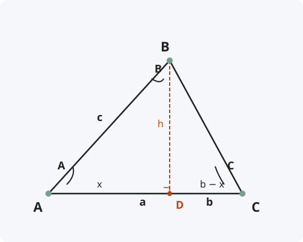

Теорема косинусов
Формулировка
Квадрат стороны треугольника равен сумме квадратов двух других сторон минус удвоенное произведение этих сторон на косинус угла между ними.
Обозначения
Пусть дан треугольник ABC со сторонами:
a = BC — сторона, противолежащая углу A
b = AC — сторона, противолежащая углу B
c = AB — сторона, противолежащая углу C
Тогда для любой стороны можно записать:
a² = b² + c² − 2bc·cos A
b² = a² + c² − 2ac·cos B
c² = a² + b² − 2ab·cos C

Доказательство
Теорема доказана.
Следствия из теоремы
- Теорема Пифагора — частный случай теоремы косинусов при C = 90°: c² = a² + b² − 2ab·cos 90° = a² + b².
- Косинус угла можно выразить через стороны: cos C = (a² + b² − c²) / (2ab).
- Если c² < a² + b², то угол C острый (cos C > 0).
- Если c² > a² + b², то угол C тупой (cos C < 0).
- Если c² = a² + b², то угол C прямой (cos C = 0).
- Теорема косинусов позволяет найти третью сторону по двум сторонам и углу между ними.
- Позволяет найти любой угол по трём известным сторонам.
Примеры применения
Пример 1. В треугольнике даны стороны a = 5, b = 7 и угол между ними C = 60°. Найдите сторону c.
Решение: c² = a² + b² − 2ab·cos C = 25 + 49 − 2·5·7·0,5 = 74 − 35 = 39 ⇒ c = √39 ≈ 6,24.
Пример 2. В треугольнике даны стороны a = 6, b = 8, c = 10. Найдите угол C.
Решение: cos C = (a² + b² − c²) / (2ab) = (36 + 64 − 100) / (2·6·8) = 0 / 96 = 0 ⇒ C = 90° (треугольник прямоугольный).
Пример 3. В треугольнике даны стороны a = 4, b = 5, c = 7. Определите вид треугольника по углам.
Решение: Найдём косинус наибольшего угла (против стороны c): cos C = (16 + 25 − 49) / 40 = −8/40 = −0,2 < 0 ⇒ угол C тупой, треугольник тупоугольный.
Историческая справка
Теорема косинусов была известна ещё в Древней Греции. В «Началах» Евклида (III век до н.э.) она сформулирована в геометрическом виде для тупоугольных и остроугольных треугольников (Книга II, предложения 12 и 13).
В алгебраической форме с использованием косинуса теорема появилась значительно позже. Французский математик Франсуа Виет (XVI век) использовал её в своих работах по тригонометрии.
В арабском мире теорему косинусов активно применял Ал-Каши (XV век) для астрономических вычислений, поэтому в некоторых странах её называют «теоремой Ал-Каши».
Интересные факты
- Теорема косинусов обобщает теорему Пифагора на произвольные треугольники.
- В навигации теорема косинусов используется для вычисления расстояний по координатам (формула гаверсинусов).
- В физике теорема косинусов применяется при сложении векторов и расчёте равнодействующей сил.
- Для сферических треугольников существует своя версия теоремы косинусов: cos c = cos a·cos b + sin a·sin b·cos C.
- Теорема косинусов лежит в основе метода триангуляции, используемого в геодезии и GPS-навигации.